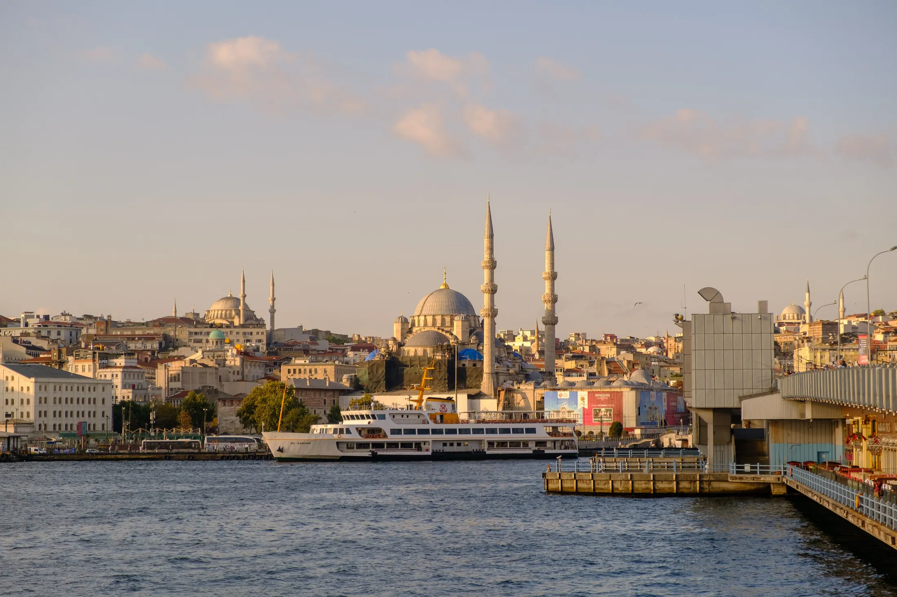
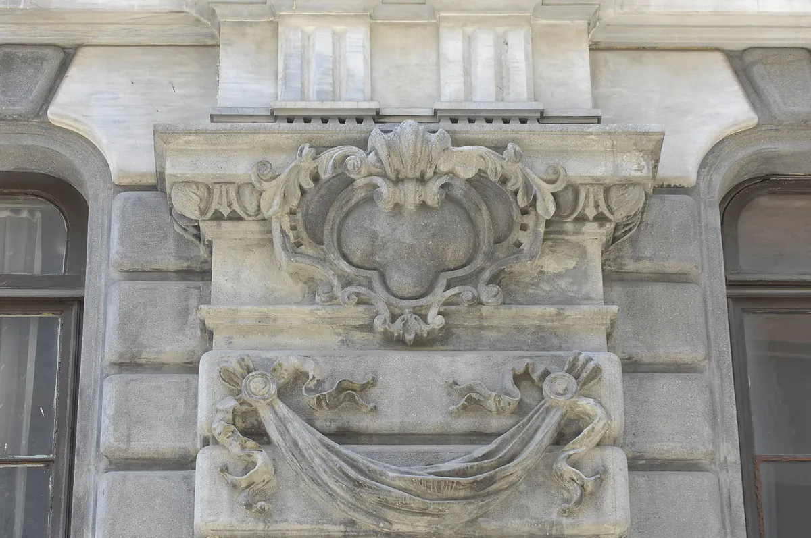
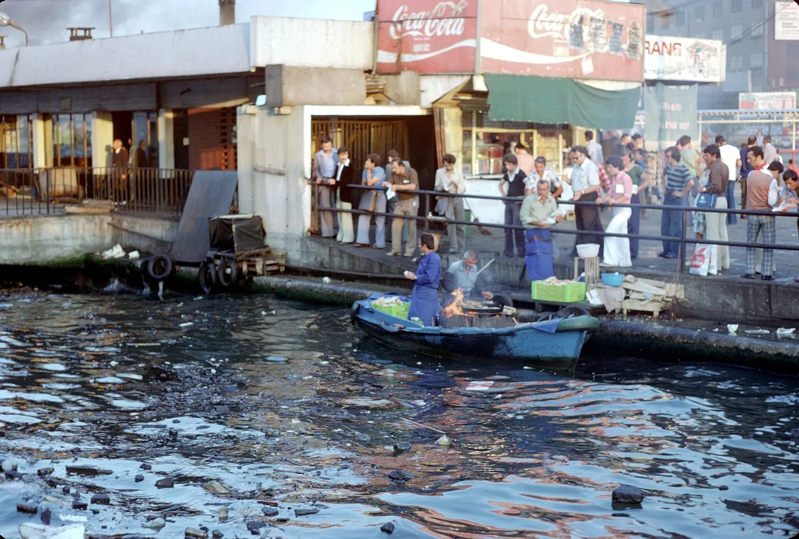

You · outbound
EWR to IST
Fri Dec 25 · evening
Dec 25 evening only. Christmas morning stays at Angela’s.
A typical nonstop lands in Istanbul the afternoon of Dec 26.

Working itinerary · Winter 2026–27
Christmas morning at Angela’s. You leave Newark that evening. Parents fly Bangalore → Istanbul, and everyone meets in Karaköy on the 26th.
At a glance
Everything below is a plan, not a booking. Items still open are flagged TBD wherever they appear.
01Travel
A Google Maps route on each card. Use the Google Flights links when you’re ready to book.
You · outbound
Fri Dec 25 · evening
Dec 25 evening only. Christmas morning stays at Angela’s.
A typical nonstop lands in Istanbul the afternoon of Dec 26.
Parents · outbound
Lands Dec 26 · possibly Dec 25
Direct on Turkish Airlines, about 8 hours.
Target landing: Dec 26, same hotel night. Arriving Dec 25 instead is still possible.
Everyone · return
Sun Jan 3 · separate tickets
You fly home to Newark on Jan 3. Parents fly home to Bangalore on Jan 3. Separate tickets.
Jan 3
Meet plan
Whoever lands first checks into Karaköy and texts the room number. You’re the later arrival on the 26th.
02Stay
Eight nights, Dec 26 in, Jan 3 out. Two rooms in the same building. Confirmation TBD

Lead pick
A restored 19th-century bank building on Bankalar Caddesi, with a rooftop bar looking over Galata and the old city. The tram and the ferry piers are just downstairs.
Ask for: two rooms on the same floor.
Alternate
A quieter address on the same street, Bankalar Caddesi. The fallback if The Bank can’t hold two rooms through New Year’s week.
Old city
Only if everyone wants Hagia Sophia at the door. Evenings would then mean a tram back to Karaköy.
03On the ground
Morning, afternoon, evening. Open a day for photos, how to get between stops, and a map. Travel times are approximate.
04The table
Book New Year’s Eve first. Everything else can wait until you’re there.

Book first
Mikla, 360 Istanbul, or Asmalı Cavit. One table for the whole group. Reservation TBD
Most nights
Karaköy Lokantası the first night you’re all in town. Also Neolokal, Ali Ocakbaşı, Yeni Lokanta.
Old city
Deraliye, Grace Rooftop, or köfte one street off Divanyolu.
No reservation
Balık ekmek at Eminönü, Güllüoğlu baklava, Çeşme Bazlama breakfast, Kadıköy if you take the ferry to Asia.
05The city
Color-coded by day, with the hotel in Karaköy at the center. Tap a pin for the name and day. Airports are left off to keep the map at city scale.
Credits
All photographs come from Wikimedia Commons under free licenses and were resized for the web. Map data and tiles © OpenStreetMap contributors.